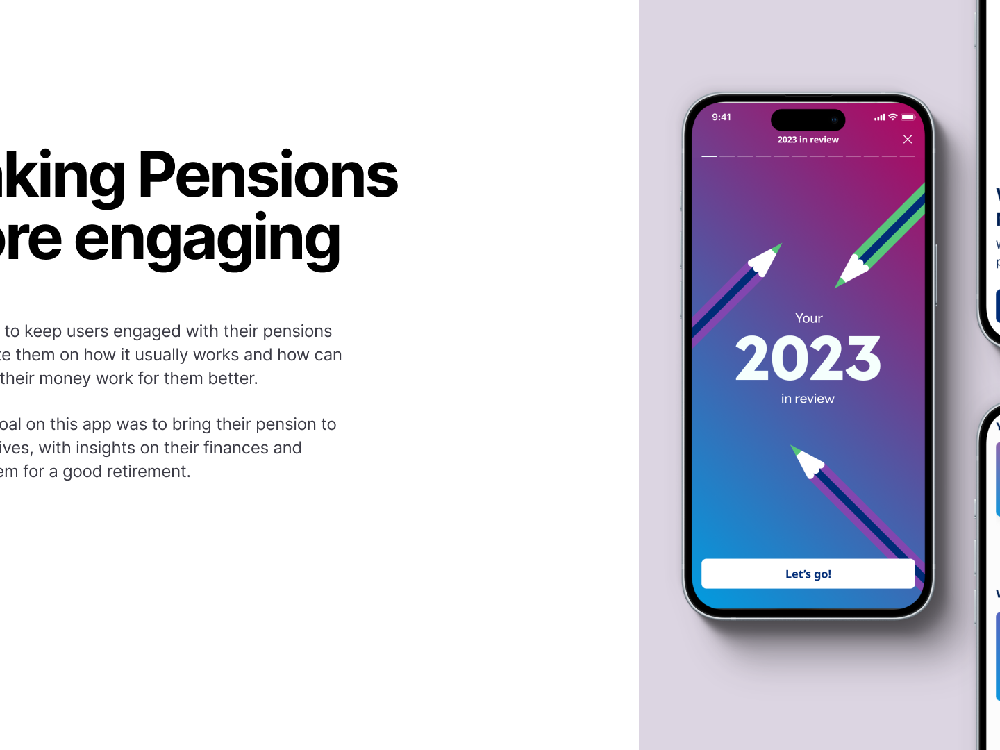

2025
Pension account
The app was rolled over to a few of the companies using Mercer, with growing numbers every day. At each iteration we improve how much the users are returning to the app and exploring the functionalities the app...
View project